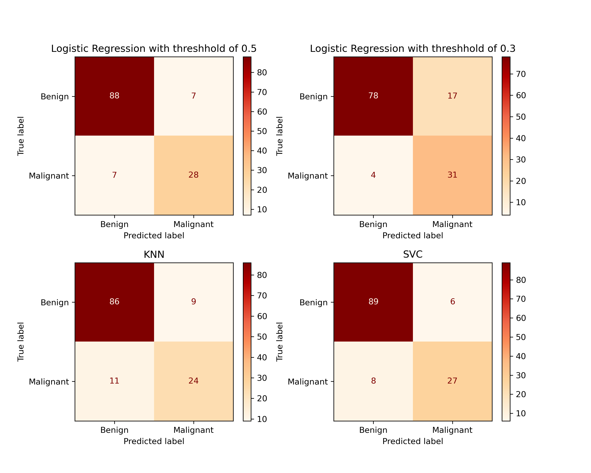
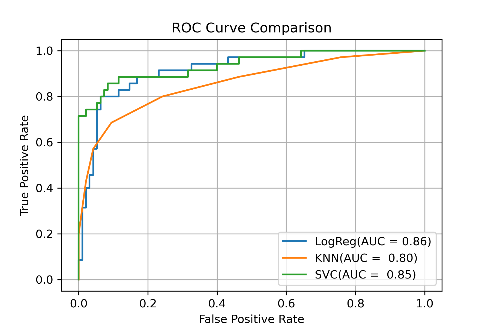
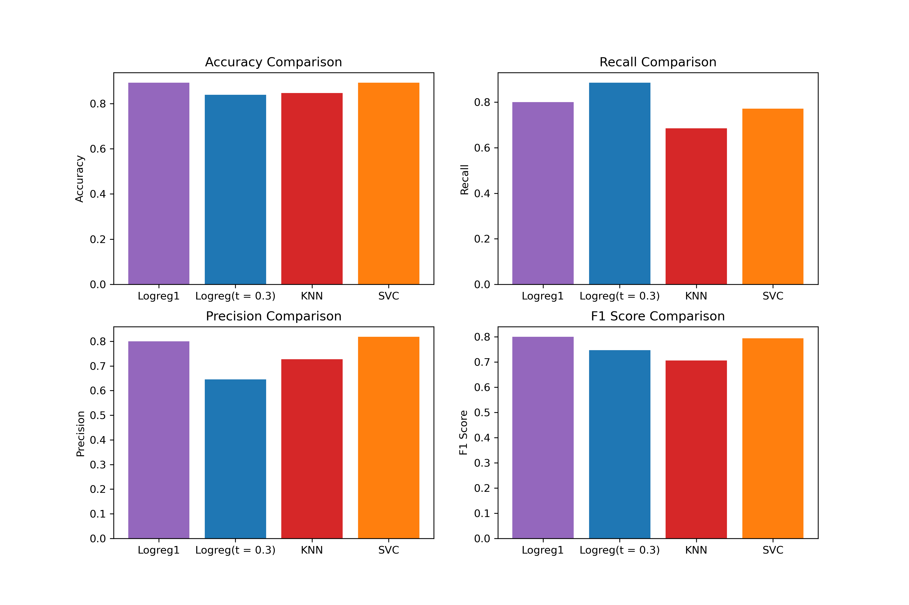

Classifying breast ultrasound images as benign or malignant using transfer learning and classical machine learning classifiers.
About
Early detection of breast cancer dramatically improves patient outcomes. This project investigates whether classical ML classifiers — trained on deep visual features from a pretrained convolutional neural network — can accurately distinguish malignant from benign tumors in breast ultrasound images.
VGG16 pretrained on ImageNet extracts rich 25,088-dimensional spatial features without training from scratch.
PCA reduces features from 25,088 to 70 components, preventing overfitting while preserving discriminative structure.
Lowering the decision threshold to 0.3 boosts malignant recall from 80% → 89%, reducing missed cancer diagnoses.
ResNet50 features fed into K-Means (k=2, k=3) reveal natural groupings in the image data without using labels.
Methodology
A four-stage workflow from raw ultrasound images to evaluated classifiers.
Inspect image counts (437 benign, 210 malignant), verify class distribution, and examine image dimensions.
01-data-exploration.ipynbVGG16 (ImageNet weights, top removed) processes each 224×224 image into a 7×7×512 feature map, saved as .npy arrays.
StandardScaler → PCA(70) → 80/20 split → Logistic Regression, KNN, and SVM trained and evaluated with confusion matrices, ROC, and AUC.
03-model-training.ipynbResNet50 extracts 2048-dim features. K-Means with k=2 and k=3 clusters images without labels; PCA visualizes separation.
04-unsupervised-model.ipynbDataset: ~647 breast ultrasound PNG images. Raw images are not stored in this repository. Download from Google Drive →
Evaluation
All models evaluated on a held-out test set of 130 images (20% of dataset). Metrics reported for the malignant (positive) class.
| Model | Accuracy | Precision | Recall | F1 Score | AUC |
|---|---|---|---|---|---|
|
Logistic Regression threshold = 0.5 |
0.800 | 0.800 | 0.800 | 0.863 | |
|
Logistic Regression threshold = 0.3 (higher recall) |
0.646 | 0.886 | 0.747 | 0.853 | |
|
K-Nearest Neighbors k = 7 |
0.727 | 0.686 | 0.706 | 0.795 | |
|
Support Vector Machine RBF kernel, C=10 |
0.818 | 0.771 | 0.794 | 0.854 |
Visualizations
Confusion matrices, ROC curves, and metric comparisons across all models.
Predicted vs. true labels for each model on the test set

LogReg AUC 0.86 · SVM AUC 0.85 · KNN AUC 0.80

Accuracy, Recall, Precision, and F1 Score across all four models

Contributors
Built for COMP 381 — Introduction to Machine Learning at the University of the Fraser Valley.